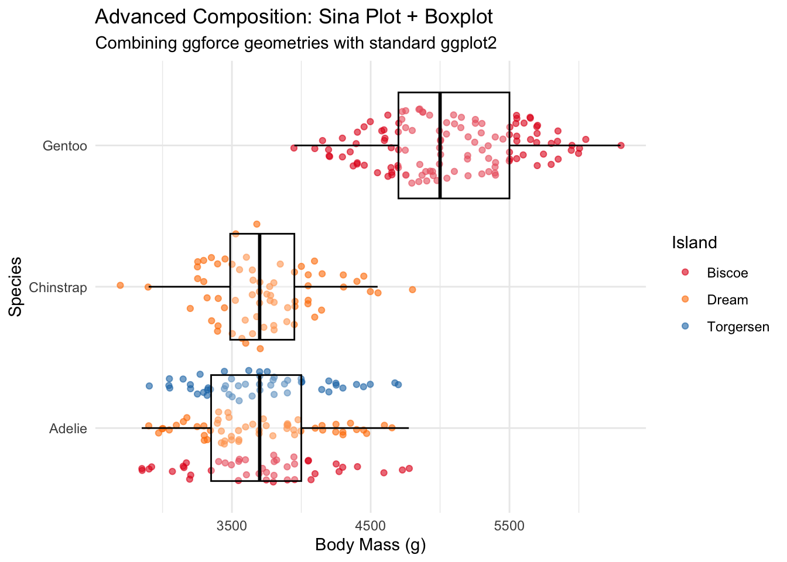

Be able to critique visualisations for clarity and effectiveness.
Know how visual perception affects the interpretation of plots.
6.1 The Grammar of Graphics Framework
The Grammar of Graphics (Wilkinson 2005) is implemented in R through the library ggplot2, a core library in tidyverse. It provides a systematic approach to constructing data visualisations. Rather than thinking about chart types (bar chart, scatter plot, etc.), the grammar breaks down visualisations into fundamental components that can be combined in flexible ways.
6.1.1 Core Components of the Grammar
The grammar consists of several key layers:
Data: The dataset being visualised. In ggplot2 this is assumed to be in tidy format. Aesthetics: referred to as aes in ggplot2. These are the visual properties that represent data variables, including:
Position (\((x,y)\) coordinates)
Colour (hue, saturation)
Shape (point shapes, line types)
Size (point size, line width)
Transparency (alpha values)
Geometries: the geometric objects that represent data points. How these are referred to in ggplot2 is included in parentheses below.
Points (geom_point())
Lines (geom_line())
Bars (geom_bar(), geom_col())
Areas (geom_area())
Text (geom_text())
Statistics (stat): (optional) statistical transformations applied to data before plotting, e.g.:
Count (frequency tables)
Smoothing (trend lines)
Binning (histograms)
Scales: How aesthetics translate data values to visual properties:
Position scales (log or square-root transformations)
Coordinate Systems: How data coordinates map to the plane of the plot:
Cartesian coordinates (most common)
Polar coordinates
Map projections
Faceting: Break data into subsets for producing multiple smaller charts:
facet_wrap(): arranges panels in rows and columns
facet_grid(): arranging panels in a grid based on variables.
6.1.2 Constructing Plots by Composing Components
The grammar allows components to be composed with one another by “adding” them to a plot to build visualisations incrementally. Here are multiple examples using the Palmer penguins dataset; we will go into building these in much more detail in the lab.
library(tidyverse)penguins <-read_csv("data/penguins.csv")ggplot(penguins, aes(x = flipper_length_mm, y = body_mass_g, color = species)) +geom_point() +facet_wrap(~island) +labs(title ="Penguin measurements by species, faceted by island",x ="Flipper length (mm)",y ="Body Mass (g)" ) +theme_minimal()
Warning: Removed 2 rows containing missing values or values outside the scale range
(`geom_point()`).
ggplot(penguins, aes(x = flipper_length_mm, y = body_mass_g)) +geom_point(aes(colour = species), alpha =0.6, size =2) +# scatter pointsgeom_smooth(aes(colour = species), method ="lm", se =TRUE) +# trend-line per speciesgeom_smooth(method ="lm", colour ="black", linetype ="dashed", se =FALSE) +# overall trend linescale_colour_viridis_d(name ="Species") +# Species colour scalelabs(title ="Multiple Geometries: Points + Trend Lines",subtitle ="Species-specific trends (colored) vs overall trend (dashed)",x ="Flipper Length (mm)",y ="Body Mass (g)" ) +theme_minimal()
Warning: Removed 2 rows containing non-finite outside the scale range (`stat_smooth()`).
Removed 2 rows containing non-finite outside the scale range (`stat_smooth()`).
Warning: Removed 2 rows containing missing values or values outside the scale range
(`geom_point()`).
ggplot(penguins, aes(x = body_mass_g)) +geom_histogram(aes(y =after_stat(density), fill = species), alpha =0.7, bins =30, position ="identity") +# Histogram of densities (rather than counts)geom_density(aes(colour = species), size =1.2) +# Add density linesscale_fill_viridis_d(name ="Species", alpha =0.7) +scale_colour_viridis_d(name ="Species") +# colour lines and fill blocks with Viridis Dlabs(title ="Statistical Transformations: Histogram + Density",x ="Body Mass (g)",y ="Density" ) +theme_minimal()
Warning: Using `size` aesthetic for lines was deprecated in ggplot2 3.4.0.
ℹ Please use `linewidth` instead.
Warning: Removed 2 rows containing non-finite outside the scale range
(`stat_bin()`).
Warning: Removed 2 rows containing non-finite outside the scale range
(`stat_density()`).
Warning: Removed 2 rows containing missing values or values outside the scale range
(`geom_point()`).
library(ggforce)penguins %>%ggplot(aes(x = body_mass_g, y = species)) + ggforce::geom_sina(aes(colour = island), size =1.5, alpha =0.6) +geom_boxplot(alpha =0.3, outlier.shape =NA, colour ="black") +scale_colour_manual(name ="Island", values =c("#E31A1C", "#FF7F00", "#1F78B4")) +labs(title ="Advanced Composition: Sina Plot + Boxplot",subtitle ="Combining ggforce geometries with standard ggplot2",x ="Body Mass (g)",y ="Species" ) +theme_minimal()
Warning: Removed 2 rows containing non-finite outside the scale range
(`stat_sina()`).
Warning: Removed 2 rows containing non-finite outside the scale range
(`stat_boxplot()`).

6.2 Visual Perception and Plot Interpretation
You may already have noticed that not all of the above plots are straightforward to interpret. ggplot gives us a lot of freedom to design our figures, but it does not tell us what are “good” and “bad” designs. For example, this plot gives the impression that welfare recipients in the US are spiralling out of control - but the \(y\)-axis starts from 94,000,000:
Plot of Federal Welfare Recipients in the USA, from here
The next example was presented by General H.R. McMaster to US officials in 2009, intended to explain the complexity of US military strategy in Afghanistan. It led the New York Times to publish an article called We Have Met the Enemy, and He Is Powerpoint.
We Have Met the Enemy, and He Is Powerpoint, from here.
Careful thought is needed to ensure that plots effectively convey the information that we want them to convey.
6.2.1 Perceptual Accuracy of Visual Elements
(Cleveland and McGill 1984) developed a theory of graphical perception, the process by which people decode quantitative information from visual representations. They argue that the effectiveness of a graph depends on how accurately viewers can visually judge the data or information that the graph encodes. They rank elementary perceptual tasks, like judging position along a common scale, length, area, angle, colour etc. by how precisely humans can perform them, based on controlled experiments.
They found that:
Position along a common scale is judged most accurately,
Length, angle and slope are less accurate, with angle and slope worse than length,
Area, volume or colour saturation are even less reliable.
These provide guidance for how we should encode data into graphs. For example, bar charts (measuring length), aligned on a common scale (height) might be preferred to pie charts (comparing angle and area).
Since (Cleveland and McGill 1984), visualisation theory has continued to develop. The full theory is well beyond the scope of this course, but the main points are:
Not all visual encodings are equal. As (Cleveland and McGill 1984) shows, position can be read most accurately, then length/angle, then area/colour.
Design with perception in mind. Prioritise encodings that make the main comparison easier, using the most informative visual encoding.
Modern tools help.ggplot2 is based on the (Wilkinson 2005), which builds on these ideas. The mapping of aes to geoms describe these perceptual choices.
6.2.2 Colour Blindness Considerations
Another important concern is accessibility. Around 8% of men and 0.5% of women are affected by colour blindness, which can make some plots impossible to perceive for some users. It is also worthwhile to be mindful that your plots may be printed out in black-and-white or viewed on greyscale screens, so relying solely on colour to make points is better avoided.
The most common type of colour blindness is red-green deficiencies, so using red-green contrast should be avoided. Fortunately, ggplot makes it straightforward to adhere to this by providing perceptually uniform, colorblind-safe palettes such as viridis or the ColorBrewer safe sets. Where possible it is still best to make sure there is visual redundancy, rather than using colour alone, using label, shape or line type.
ggplot(penguins, aes(x = flipper_length_mm, y = body_mass_g, color = species)) +geom_point(size=3) +scale_colour_manual(values=c("Adelie"="red", "Chinstrap"="green", "Gentoo"="blue")) +theme_minimal()
Warning: Removed 2 rows containing missing values or values outside the scale range
(`geom_point()`).
It would be difficult for someone with red-green colour blindness to distinguish Adelie and Chinstrap penguins.
ggplot(penguins, aes(x = flipper_length_mm, y = body_mass_g, color = species, shape=species)) +geom_point(size=3) +scale_colour_brewer(type="qual") +theme_minimal()
Warning: Removed 2 rows containing missing values or values outside the scale range
(`geom_point()`).
Using scale_colour_brewer with type="qual" tells R that this is qualitative data (as opposed to sequential, where the factor ordering is meaningful); an appropriate colour palette is then selected automatically. The addition of shape=species also ensures that a viewer who finds colour perception challenging will still be able to interpret the plot.
Cleveland, William S., and Robert McGill. 1984. “Graphical Perception: Theory, Experimentation, and Application to the Development of Graphical Methods.”Journal of the American Statistical Association 79 (387): 531–54. https://doi.org/10.1080/01621459.1984.10478080.